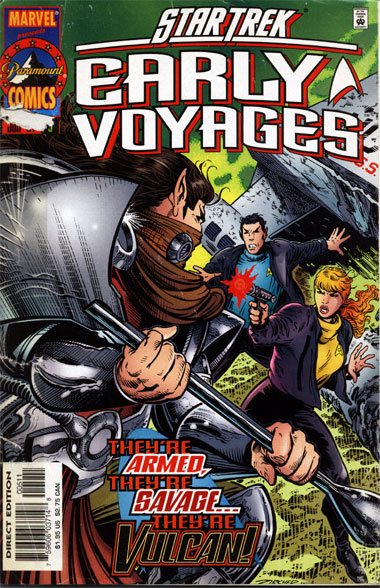
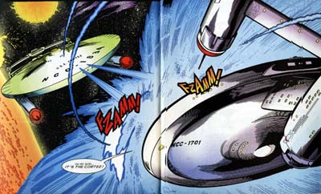

|


|

|
Gênese
| Episódios I Reflexões
| Palavras do autor | Palavras
do artista Star Trek
Early Voyages, nº 05 – junho de 1997  História: Dan Abnett e Ian Edginton Material produzido por Salvador Nogueira para o Trek Brasilis
Data Estelar: desconhecida Sinopse: A Enterprise vai até o planeta Darrien 224, procurando pela USS Cortez, uma nave da Frota desaparecida já há oito semanas. Um grupo de descida com Pike, Colt, Boyce, Spock e mais dois oficiais vai à superfície e encontra uma nave auxiliar da Cortez, acidentada. Eles não encontram nenhum tripulante e, antes que possam seguir viagem, são atacados por estranhos guerreiros armados até os dentes. O arsenal tem inclusive Lirpas, uma tradicional arma Vulcana. Os guerreiros estão para transformar o grupo de descida em pó quando um outro grupo, numérica e tecnologicamente superior, chega em defesa dos tripulantes da Enterprise. Pike agradece pela ajuda, apenas para descobrir que s recém-chegados os estão capturando. Spock nota, com surpresa, que eles falam Vulcano. O grupo de descida é levado até a cidade daqueles estranhos Vulcanos, chamada por eles de a "Última-De-Todas-As-Cidades". Lá eles encontram a matriarca T'Kell, que revela que seu povo é descendente de uma colônia Vulcana estabelecida há dois mil anos, antes da disseminação dos ensinamentos de Surak. Segundo ela, seu povo tem intenção de retornar à comunidade galáctica, embora alguns tenham por real aspiração voltar a Vulcano para "reeducar" seu povo. O grupo que atacou Pike no deserto é composto por guerreiros que desejam manter seu isolamento. T'Kell também revela que tem o capitão da USS Cortez, John Stone, sob custódia. Pike conversa com ele e descober que a maior parte da tripulação da Cortez foi assassinada pelos guerreiros rebeldes, e a nave conquistada. Em órbita, a Número Um perde contato com o grupo de descida, por causa da alta interferência atmosférica do planeta. A Enterprise sofre um ataque da Cortez, que está mesmo sob o comando dos rebeldes Vulcanos. Eles instalaram nela o Tol Par-Doj, uma arma tão poderosa que foi banida de Vulcano após Surak. Agora, eles a usam contra a Enterprise. Continua...  Comentários A idéia por trás de "Cloak & Dagger" não é exatamente nova; a premissa toda é muito parecida com a criada para explicar a relação entre o Império Estelar Romulano e seus primos Vulcanos. A diferença básica entre as duas histórias é o impacto dessa descoberta em Spock. O Vulcano é o personagem que mais sai ganhando, adquirindo novas texturas ao ter de se confrontar com o lado violento de sua raça. A história também serve para explicar a posterior apatia de Spock quando da constatação de que os Vulcanos e os Romulanos eram aparentados, no episódio clássico "Balance of Terror" --para ele, tudo aquilo soava como "old news", levando em conta sua experiência relatada aqui. O enredo faz um bom equilíbrio entre o uso de suspense e a apresentação de uma trama que, se não é original, ao menos é bastante interessante. Trata-se também do primeiro "cliffhanger" da revista --a primeira história que só terá seu desfecho na próxima edição. O recurso seria usado com certa frequência em edições futuras. A interação entre os personagens segue sendo o grande destaque da série. Aqui a maior menção vai para a ordenança Colt, na superfície, e para a Número Um, em órbita --o que mostra um curioso mais bem-vindo diferencial com relação ao clima de "The Cage", que ainda tinha um tom bem mais machista (apesar de a primeiro-oficial da Enterprise ser mulher) do que esperaríamos do século 23.
|